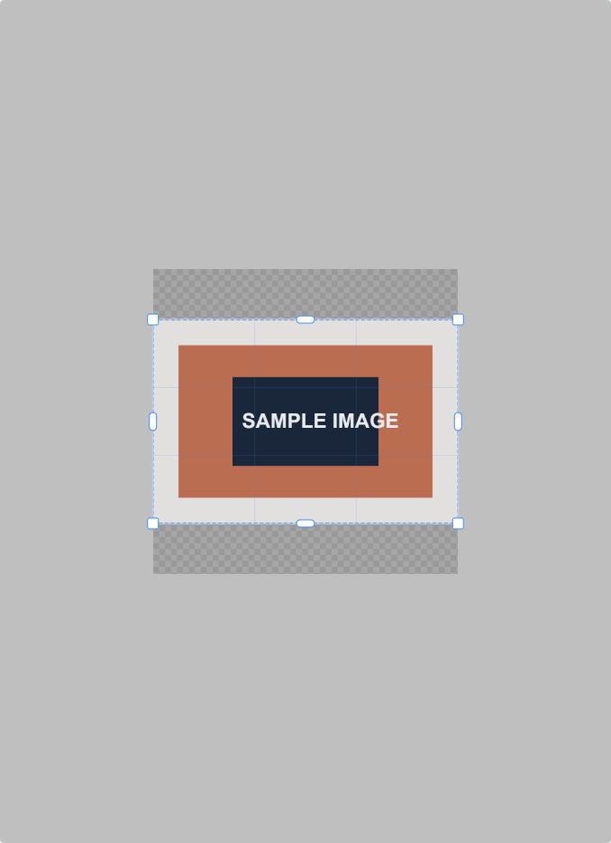
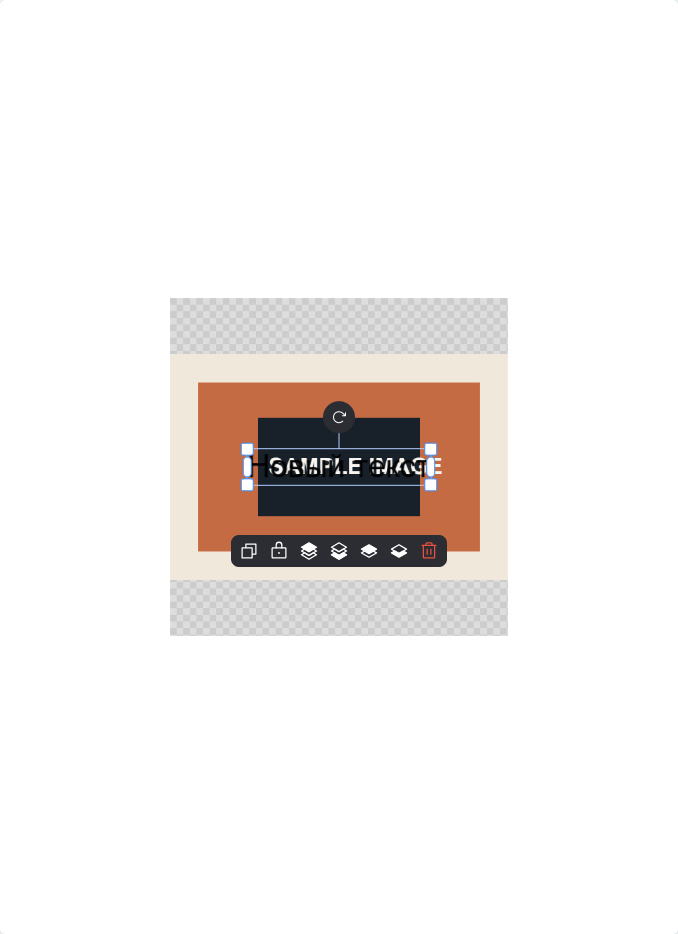

Case study · Product Image Editor
A reusable image editor for inSales merchant workflows
I built a TypeScript and FabricJS editor core, integrated it into the inSales product, and kept its state consistent across editing, history, templates, and browser interactions.
- Role
- Frontend Developer in a cross-functional product team
- Production scale
- Thousands of inSales clients
- Stack
- TypeScript, FabricJS, Vue, Jest, Playwright

01 · Context
Merchant administration · browser editing · reusable core
The product needed more than a canvas with controls
Merchants needed to prepare product images without leaving the administration panel. The editor covered import, replacement, crop, text, shapes, layers, templates, AI-assisted image operations, and export.
The harder requirement was consistency. The same object could enter through initial loading, import, copy and paste, a template, or history restoration. Each path had to preserve the same styles, domain data, selection rules, and user-visible history.
Verified outcome
The production editor is used by thousands of inSales clients. Public package distribution is separate evidence and is not used as a production-user count.
02 · Architecture
Focused ownership instead of one editor component
The editor core owns editing behaviour
I split the library into focused managers for image operations, text, shapes, crop, history, templates, layers, zoom, clipboard behaviour, errors, and interaction blocking. Vue integration remained responsible for product-specific UI and domain data.
Public API example
The portfolio uses the real API exposed by the public repository:
await editor.imageManager.importImage({
source,
scale: 'image-contain'
})
const result = await editor.imageManager.exportCanvasAsImageFile({
fileName: 'edited-image.png',
contentType: 'image/png'
})03 · Browser interaction
The public demo makes the interaction model inspectable
These captures use a generated sample image inside the public demo. They contain no production or personal data.



04 · Performance
Image representation changed the state model
Base64 data made history expensive
Large base64 strings lived inside canvas objects and expanded serialized history. Image conversion and export also kept expensive work on the main thread.
I moved raster conversion and heavy export work toward Blob and Object URLs and Web Workers. Export used a background canvas clone, initial images were preloaded, and Object URLs were cleaned up when the editor was destroyed.
The confirmed result is qualitative: the change kept heavy work off the main thread and improved interaction responsiveness. No percentage is claimed because a measured before-and-after value is not available.
05 · Quality
Tests followed the browser paths that failed in practice
Interaction-heavy behaviour needed browser tests
Jest and Playwright coverage included history, initial state, image import, text inside shapes, live scaling, copy and restore, and crop. QA notes documented changed behaviour and edge cases for release.
“What impressed me most was the infographic editor he built essentially from scratch: a full canvas-based graphic editor with artboards, shapes, text styling, templates, and undo/redo history.”
Inspect the public implementation
The repository and demo show the reusable library and its current public API. They do not prove the number of production users; that production scale comes from verified inSales experience.